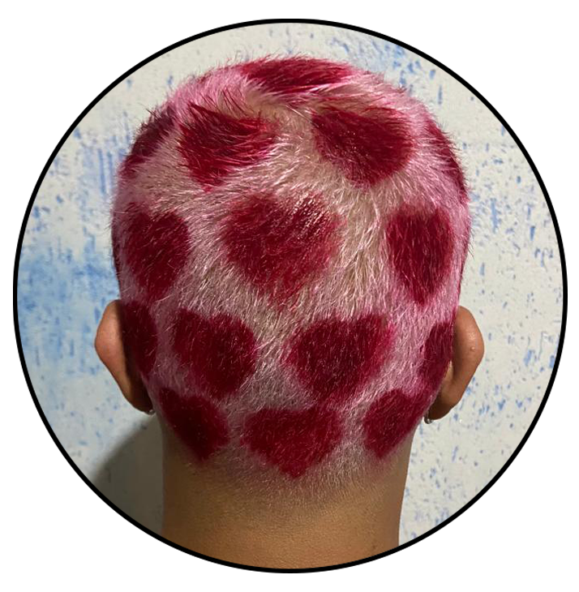

Sou apaixonado por tatuagem, atualmente tenho sete e, seis delas são só no braço esquerdo. Além das tattoos, também curto muito drinques, lutas e pintar o cabelo.
No final da pandemia, comecei a cuidar mais de mim. Fiz reeducação alimentar e entrei para o Muay Thai e para o Jiu-Jitsu, ambos com a minha irmã. Além das lutas, também faço academia e frequento um centro de Umbanda com ela.
